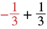
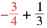
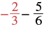
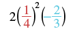
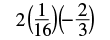
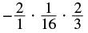
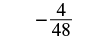
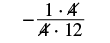
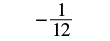
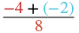

ভগ্নাংশযুক্ত বীজগাণিতিক রাশির মান নির্ণয়
উৎস-অনুগত উপবিভাগ · m81289-fs-id1612685। সম্পূর্ণ বইয়ের অনুবাদ এখনও চলছে। গাণিতিক চিহ্ন, সংখ্যা ও মূল কাঠামো অক্ষুণ্ণ; প্রযোজ্য ক্ষেত্রে সূত্রের শব্দলেবেল বাংলায় অনূদিত। মূল ছবির ভিতরের ইংরেজি লেবেলের অর্থ বাংলা বিবরণে আছে। স্বাধীন শিক্ষক ও ভাষা-পর্যালোচনা বাকি। অন্য উপবিভাগের উৎস-লিঙ্কে ইন্টারনেট প্রয়োজন।
ভগ্নাংশযুক্ত বীজগাণিতিক রাশির মান নির্ণয়
আগেও আমরা রাশির মান নির্ণয় করেছি। এখন ভগ্নাংশযুক্ত রাশির মানও নির্ণয় করতে পারব। মনে রেখো, কোনো রাশির মান নির্ণয় করতে হলে সেই রাশিতে চলের দেওয়া মান বসিয়ে তারপর সরল করতে হয়।
অনুশীলন · এই প্রশ্নের লিঙ্ক
- ⓐ
- ⓑ
সমাধান
ⓐ মান নির্ণয়ের রাশিটি হল । এখানে তাই মানটি বসাও -এর জায়গায়।
নির্দেশ: x-এর জায়গায় ঋণাত্মক এক-তৃতীয়াংশ বসাও; ভগ্নাংশের সামনে ঋণাত্মক চিহ্ন, লব ১ ও হর ৩। বসানোর মানটি লাল রঙে দেখানো। |
 বাঁ দিকে লাল রঙে ভগ্নাংশের সামনে ঋণাত্মক চিহ্ন, লব ১ ও হর ৩। এর সঙ্গে যোগ ডান দিকের লব ১ ও হর ৩-এর ভগ্নাংশ। দুটি পরস্পরের বিপরীত সংখ্যা; যোগফল ০। |
| সরল করো। |
ⓑ মান নির্ণয়ের রাশিটি হল । এখানে তাই মানটি বসাও -এর জায়গায়।
নির্দেশ: x-এর জায়গায় ঋণাত্মক ভগ্নাংশ বসাও, যার লব ৩ ও হর ৪। বসানোর মানটি লাল রঙে দেখানো। |
 বাঁ দিকে লাল রঙে ভগ্নাংশের সামনে ঋণাত্মক চিহ্ন, লব ৩ ও হর ৪। এর সঙ্গে যোগ ডান দিকের লব ১ ও হর ৩-এর ভগ্নাংশ। |
| লঘিষ্ঠ সাধারণ হর ১২ নিয়ে সমতুল ভগ্নাংশে লেখো। | |
| লব ও হরের গুণগুলি করো। | |
| যোগ করো। |
অনুশীলন · এই প্রশ্নের লিঙ্ক
রাশিটির মান নির্ণয় করো: । দেওয়া আছে
সমাধান
রাশিতে মানটি বসাও -এর জায়গায়।
নির্দেশ: y-এর জায়গায় ঋণাত্মক ভগ্নাংশ বসাও, যার লব ২ ও হর ৩। বসানোর মানটি লাল রঙে দেখানো। |
 বাঁ দিকের ভগ্নাংশের সামনে ঋণাত্মক চিহ্ন, লব ২ ও হর ৩; এই ভগ্নাংশটি লাল রঙে দেখানো। তা থেকে ডান দিকের লব ৫ ও হর ৬-এর ভগ্নাংশ বিয়োগ করা হয়েছে। |
| লঘিষ্ঠ সাধারণ হর ৬ নিয়ে সমতুল ভগ্নাংশে লেখো। | |
| বিয়োগ করো। | |
| ভগ্নাংশটিকে লঘিষ্ঠ আকারে লেখো। |
অনুশীলন · এই প্রশ্নের লিঙ্ক
রাশিটির মান নির্ণয় করো: । দেওয়া আছে এবং
সমাধান
চলগুলির মান রাশিতে বসাও। লক্ষ্য করো রাশিটি: এখানে ঘাত ২ শুধু এই চলটির উপর প্রযোজ্য:
রাশিটি হল ২ গুণ x-এর বর্গ গুণ y; ঘাত ২ শুধু x-এর উপর প্রযোজ্য। |
|
নির্দেশ: x-এর জায়গায় লব ১ ও হর ৪-এর ভগ্নাংশ এবং y-এর জায়গায় ঋণাত্মক ভগ্নাংশ, যার লব ২ ও হর ৩, বসাও। প্রথম মানটি লাল এবং দ্বিতীয়টি নীল রঙে দেখানো। |
 ২ গুণ বন্ধনীর ভিতরে লব ১ ও হর ৪-এর পুরো ভগ্নাংশের বর্গ, গুণ বন্ধনীর ভিতরে ঋণাত্মক ভগ্নাংশ, যার লব ২ ও হর ৩। প্রথম ভগ্নাংশটি লাল এবং ঋণাত্মক ভগ্নাংশটি নীল রঙে দেখানো। |
| আগে ঘাতের মান নির্ণয় করো। |  ২ গুণ বন্ধনীর ভিতরে লব ১ ও হর ১৬-এর ভগ্নাংশ, গুণ বন্ধনীর ভিতরে ঋণাত্মক ভগ্নাংশ, যার লব ২ ও হর ৩। |
| গুণ করো। গুণফল ঋণাত্মক হবে। |  সামনের ঋণাত্মক চিহ্নের পরে লব ২ ও হর ১-এর ভগ্নাংশ, গুণ লব ১ ও হর ১৬-এর ভগ্নাংশ, গুণ লব ২ ও হর ৩-এর ভগ্নাংশ। |
| লবগুলি এবং হরগুলি গুণ করো। |  ভগ্নাংশের সামনে ঋণাত্মক চিহ্ন, লব ৪ ও হর ৪৮। |
| লব ও হরকে সাধারণ গুণনীয়ক দিয়ে ভাগ করো। |  ভগ্নাংশের সামনে ঋণাত্মক চিহ্ন, লব ১ গুণ ৪ ও হর ৪ গুণ ১২। লব ও হরের সাধারণ গুণনীয়ক ৪ কেটে দেখানো হয়েছে; অর্থাৎ লব ও হর উভয়কে ৪ দিয়ে ভাগ করা হয়েছে। |
| ভগ্নাংশটিকে লঘিষ্ঠ আকারে লেখো। |  ভগ্নাংশের সামনে ঋণাত্মক চিহ্ন, লব ১ ও হর ১২। |
অনুশীলন · এই প্রশ্নের লিঙ্ক
রাশিটির মান নির্ণয় করো: । দেওয়া আছে এবং
সমাধান
রাশিতে চলগুলির মান বসিয়ে সরল করো। লবের পুরো যোগফল আগে নির্ণয় করো; এখানে হরে বসানো ৮ শূন্য নয়।
নির্দেশ: p-এর জায়গায় ঋণাত্মক ৪, q-এর জায়গায় ঋণাত্মক ২ এবং r-এর জায়গায় ৮ বসাও। মানগুলি যথাক্রমে লাল, নীল ও লাল রঙে দেখানো। |
 ভগ্নাংশের লবে ঋণাত্মক ৪ যোগ বন্ধনীর ভিতরে ঋণাত্মক ২, হরে ৮। লবের পুরো যোগফলকে ৮ দিয়ে ভাগ করা হবে। ঋণাত্মক ৪ ও ৮ লাল রঙে এবং ঋণাত্মক ২ নীল রঙে দেখানো। |
| আগে লবের যোগ করো। | |
| ভগ্নাংশটিকে লঘিষ্ঠ আকারে লেখো। |